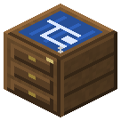

Конструкторское бюро


Чертёж своими силами: опытные образцы (сгорают на испытаниях) + 8 бумаги + чернила (чернильный мешок / чёрный краситель), сутки-трое.
Чертёж своими силами: опытные образцы (сгорают на испытаниях) + 8 бумаги + чернила (чернильный мешок / чёрный краситель), сутки-трое. Поздним чертежам нужна основа - предыдущий чертёж, он не тратится. Рецепты - в NEI. Shift + пустая рука: забрать чертёж, а если его нет и бюро стоит - вернуть всё заложенное.
Параметры
| Эпоха | 3 — Электричество |
|---|---|
| Многоблок | нет |
| Привод | топка / своё |
| что делает | чертежи: образцы + бумага + время (сутки+) |
| из чего | книжная полка, компас, верстак, бумага, доски, стальные листы |
Кто кормит
- dustSulfur ← Химический реактор, Реактор высокого давления
- ingotInvar ← Тигельная печь
- Промежуточный патрон ← Паровой патронный пресс
- Винтовочный патрон ← Паровой патронный пресс
- Шлаковата ← Тигельная печь
- Диоксид урана (природный) ← Реактор высокого давления
Кого кормит
- машины Zavod её продукт не едят
Как устроено (из кода)
Конструкторское бюро: чертёж своими силами. Инженеры гоняют опытные образцы на стенде до разрушения (образцы сгорают), считают и чертят. Энергии не ест - платишь образцами, бумагой и временем (сутки и больше). Образцы - изделия прошлой ступени: чертёж не откроешь раньше, чем завод до него дорос. У поздних чертежей нужна ОСНОВА - предыдущий чертёж; он лежит в бюро и не тратится. Найденный в крепости чертёж - сэкономленные дни и образцы. Копия (бумага + железная пыль) - как была. Слоты: 0-8 образцы (винтовки не стопкуются - каждой свой слот), 9 бумага, 10 чернила, 11 основа, 12 готовый чертёж. Shift + пустая рука: забрать чертёж; если готового нет и бюро стоит - вернуть всё заложенное.